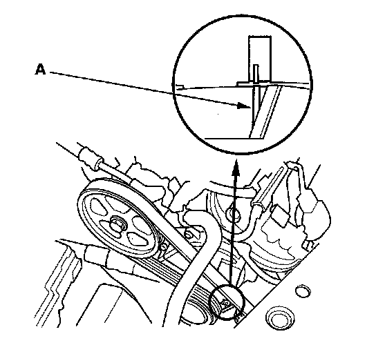
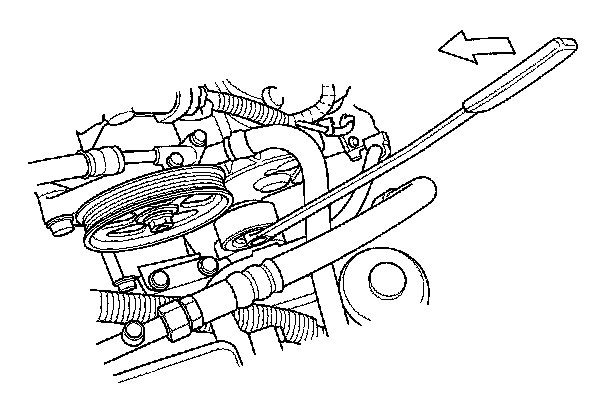
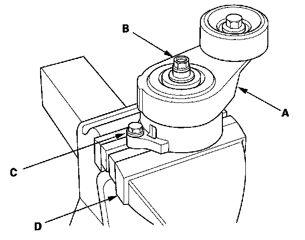
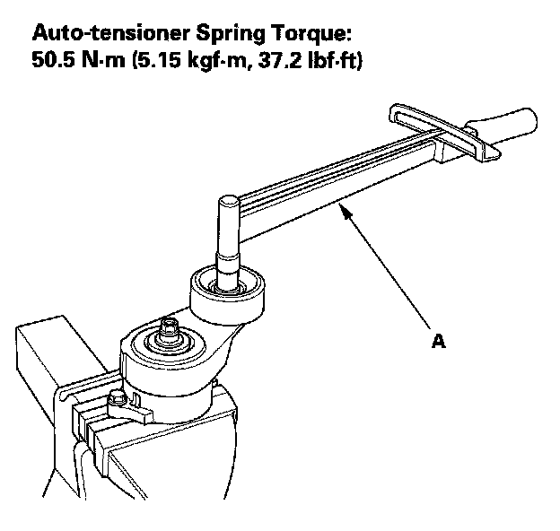

Drive Belt Tensioner: Testing and Inspection
Drive Belt Auto-tensioner InspectionSpecial Tools Required
Belt tension release tool Snap-on YA9317 or equivalent, commercially available
1. Turn the ignition switch ON (II), then make sure to turn the A/C switch OFF.

2. With the engine OFF, check the position of the auto-tensioner indicator's pointer (A). Start the engine, then check the position again with the engine idling. If the position of the indicator moves or fluctuates a lot, replace the auto-tensioner.
3. Check for abnormal noise from the tensioner pulley. If you hear any abnormal noise, replace the auto-tensioner pulley.
4. Remove the drive belt.

5. Move the auto-tensioner within its limit using the belt tension release tool in the direction shown. Check that the tensioner moves smoothly and without any abnormal noise. If the tensioner does not move smoothly or you hear abnormal noise, replace the auto-tensioner.
6. Remove the auto-tensioner.

7. Clamp the auto-tensioner (A) by using a 10 mm bolt (B), 8 mm bolt (C), and a vise (D) as shown. Do not clamp the auto-tensioner itself.

8. Attach a torque wrench (A) to the pulley bolt. Measure the torque when the tensioner is turned counterclockwise. If the torque is less than the specified value, replace the auto-tensioner.
Auto-tensioner Spring Torque:
50.5 N.m (5.15 kgf.m, 37.2 lbf.ft)